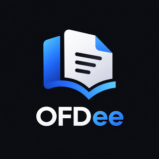

打开
未打开文件
/ 0
100%
旋转当前页
顺时针 90°
旋转全部页
顺时针 90°
复位旋转
全部恢复原方向
当前页 PNG
2 倍分辨率图片
全部页 PNG
打包为 zip
转存为 PDF
全文合成一个 PDF
+

OFDee
OFD / PDF 阅读器
v1.2.0
把 .ofd 或 .pdf 文件拖到窗口里，或点击下面的按钮选择文件
选择文件
最近打开
松开鼠标，打开文件
设置
外观
跟随系统
深色
浅色
系统集成
关联 .ofd 文件
双击 OFD 文件时用 OFDee 打开
关于
OFDee
v1.2.0
—
便携版：不写系统目录，配置存放于 %APPDATA%\OFDee
正在处理…